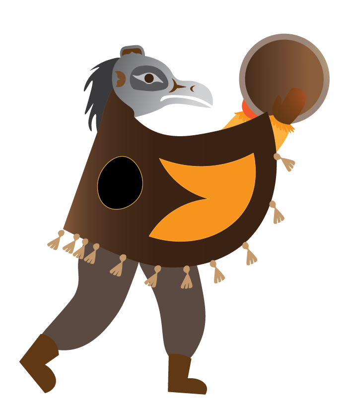
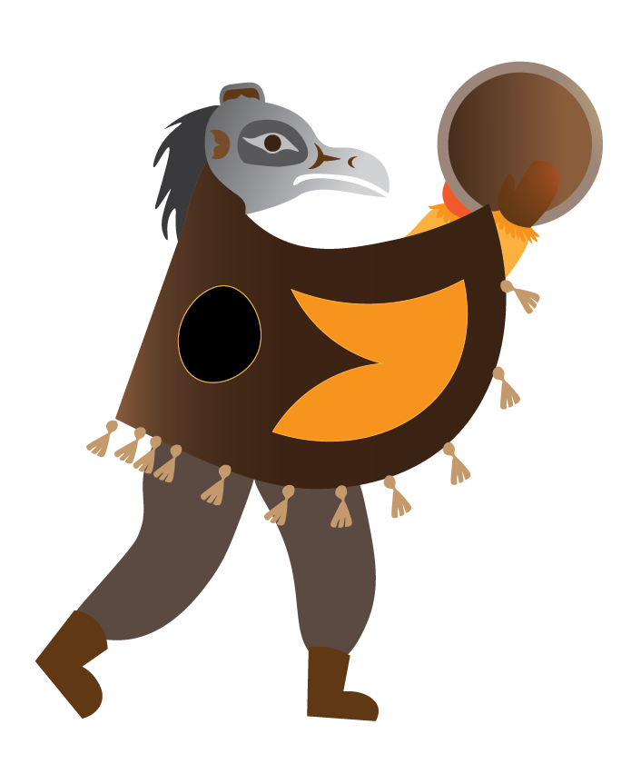

Winter Solstice 2022
2023 versionContext
The Winter solstice is significant in Indigenous communities because it marks the start of the new season, and is celebrated with rituals and ceremonies. It is seen as a time of renewal and rebirth, and is a reminder of the importance of connection to the land.
To ensure I understand and created an educated illustation respectful to the Indigneous culture, I reqested the purchese of 3 books. The first being the general understanding of the art form in different dimensions, the second on how to design more Pacific Northwest Coast region artwork. With the third a collection of assts, and guide to recognizing the different crest of the Northwest Coast region.
My role
I created illustration and visual design of both Winter Solstices appreciation cards design and the organization of the mailing and ordering for the number of cards for the agency.
Intial Idealization
Indigenous Mythology
I chose to include the Thunderbird, the men in the woods,the Engel,and the raven.
 



Final Design


Impact
I organized the order of 350 cards of our 3 locations, and coordinated mailout of 150 of the cards to our community partners.